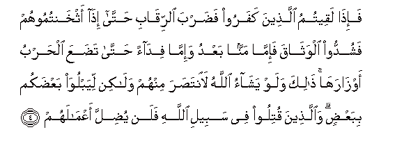

Sacred Texts Islam Index
Hypertext Qur'an Unicode Palmer Pickthall Yusuf Ali English Rodwell
Sūra XLVII.: Muḥammad (the Prophet). Index
Previous Next

The Holy Quran, tr. by Yusuf Ali, [1934], at sacred-texts.com
Sūra XLVII.: Muḥammad (the Prophet).
Section 1
1. Allatheena kafaroo wasaddoo AAan sabeeli Allahi adalla aAAmalahum
1. Those who reject God
And hinder (men) from
The Path of God,
Their deeds will God
Render astray
(From their mark).
2. Waallatheena amanoo waAAamiloo alssalihati waamanoo bima nuzzila AAala muhammadin wahuwa alhaqqu min rabbihim kaffara AAanhum sayyi-atihim waaslaha balahum
2. But those who believe
And work deeds of
Righteousness, and believe
In the (Revelation) sent down
To Muhammad—for it is
The Truth from their Lord,
He will remove from them
Their ills and improve
Their condition.
3. Thalika bi-anna allatheena kafaroo ittabaAAoo albatila waanna allatheena amanoo ittabaAAoo alhaqqa min rabbihim kathalika yadribu Allahu lilnnasi amthalahum
3. This because those who
Reject God follow vanities,
While those who believe follow
The Truth from their Lord:
Thus does God set forth
For men their lessons
By similitudes.

4. Fa-itha laqeetumu allatheena kafaroo fadarba alrriqabi hatta itha athkhantumoohum fashuddoo alwathaqa fa-imma mannan baAAdu wa-imma fidaan hatta tadaAAa alharbu awzaraha thalika walaw yashao Allahu laintasara minhum walakin liyabluwa baAAdakum bibaAAdin waallatheena qutiloo fee sabeeli Allahi falan yudilla aAAmalahum
4. Therefore, when ye meet
The Unbelievers (in fight),
Smite at their necks;
At length, when ye have
Thoroughly subdued them,
Bind a bond
Firmly (on them): thereafter
(Is the time for) either
Generosity or ransom:
Until the war lays down
Its burdens. Thus (are ye
Commanded): but if it
Had been God's Will,
He could certainly have exacted
Retribution from them (Himself);
But (He lets you fight)
In order to test you,
Some with others.
But those who are slain
In the way of God,
He will never let
Their deeds be lost.
5. Sayahdeehim wayuslihu balahum
5. Soon will He guide them
And improve their condition,
6. Wayudkhiluhumu aljannata AAarrafaha lahum
6. And admit them to
The Garden which He
Has announced for them.
7. Ya ayyuha allatheena amanoo in tansuroo Allaha yansurkum wayuthabbit aqdamakum
7. O ye who believe!
If ye will aid
(The cause of) God,
He will aid you,
And plant your feet firmly.
8. Waallatheena kafaroo fataAAsan lahum waadalla aAAmalahum
8. But those who reject (God),
For them is destruction,
And (God) will render
Their deeds astray
(From their mark).
9. Thalika bi-annahum karihoo ma anzala Allahu faahbata aAAmalahum
9. That is because they
Hate the Revelation of God;
So He has made
Their deeds fruitless.
10. Afalam yaseeroo fee al-ardi fayanthuroo kayfa kana AAaqibatu allatheena min qablihim dammara Allahu AAalayhim walilkafireena amthaluha
10. Do they not travel
Through the earth, and see
What was the End
Of those before them
(Who did evil)?
God brought utter destruction
On them, and similar
(Fates await) those who
Reject God.
11. Thalika bi-anna Allaha mawla allatheena amanoo waanna alkafireena la mawla lahum
11. That is because God
Is the Protector of those
Who believe, but
Those who reject God
Have no protector.